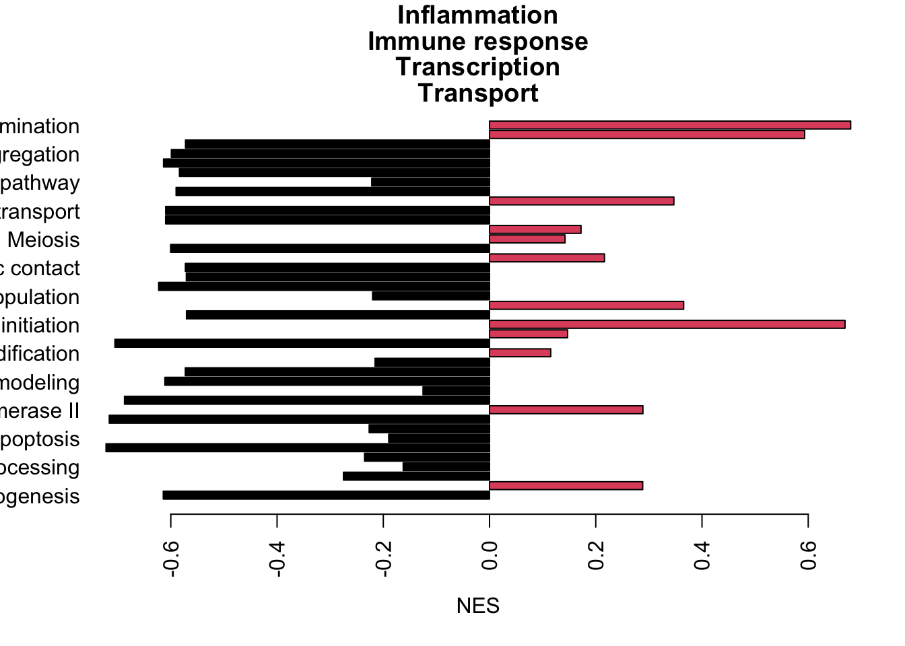
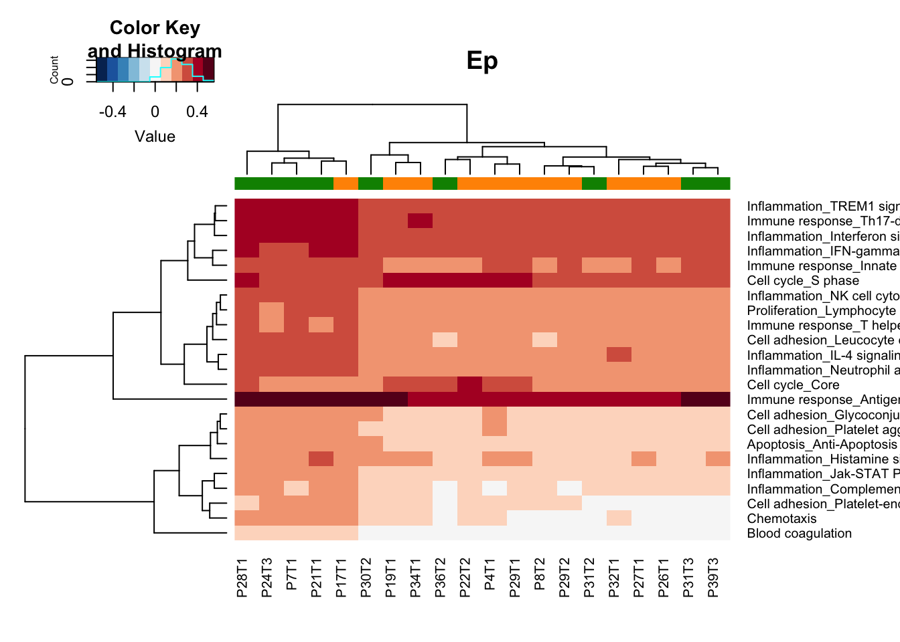
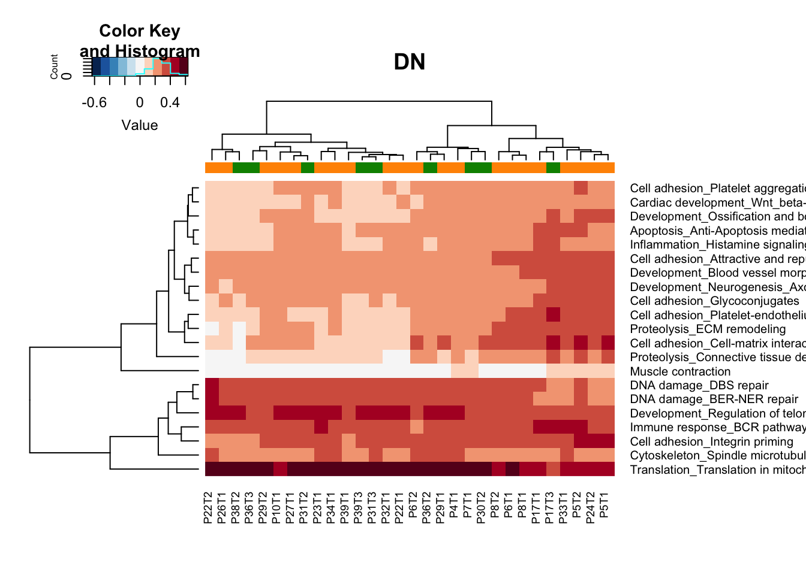

Chapter 13 Summary of GSEA runs
13.1 Stable vs growing: all samples
Below is a summary of growing vs stable comparisons using Process Networks:
d1=DNismr3$ProcessNetworks[, c("stable_vs_growing NES", "stable_vs_growing padj")]
e1=Epismr3$ProcessNetworks[, c("stable_vs_growing NES", "stable_vs_growing padj")]
c1=CDismr3$ProcessNetworks[, c("stable_vs_growing NES", "stable_vs_growing padj")]
#
ds=which(d1[ ,2]<0.05)
es=which(e1[ ,2]<0.05)
cs=which(c1[ ,2]<0.05)
AUnique=c(rownames(d1)[ds], rownames(e1)[es], rownames(c1)[cs])
xalist=unique(AUnique)
tx=cbind(as.numeric(d1[match(xalist, rownames(d1)), 1]),as.numeric(e1[match(xalist, rownames(e1)), 1]),
as.numeric(c1[match(xalist, rownames(c1)), 1]))
tx2=cbind(as.numeric(d1[match(xalist, rownames(d1)), 2]),as.numeric(e1[match(xalist, rownames(e1)), 2]),
as.numeric(c1[match(xalist, rownames(c1)), 2]))
tx[which(tx2>0.1, arr.ind = T)]=0
rownames(tx)=substr(xalist, 2, 100)
txb=sapply(strsplit(rownames(tx), "_"), function(x) x[1])
rCol=c(brewer.pal(12, "Set3"), brewer.pal(8, "Set2"))[factor(txb)]
colnames(tx)=c("DN", "Ep", "CD")
#pdf("~/Desktop/5A-summary-pathways-process-networks.pdf", height=9, width=4)
par(oma=c(1, 1, 1, 5))
ax=heatmap.2(tx, col=RdBu[11:1], trace = "none", scale = "none", RowSideColors = rCol)
Figure 13.1: GSEA summary stable growing
## re-order this?
axb=ax$carpet
an2=c(brewer.pal(12, "Set3"), brewer.pal(8, "Set2"))[factor(sapply(strsplit(colnames(axb), "_"), function(x) x[1]))]
colnames(axb)=sapply(strsplit(colnames(axb), "_"), function(x) x[length(x)])
rOrd=order(an2)par(oma=c(1, 1, 1, 3))
heatmap.2(t(axb[, rOrd]), col=RdBu[11:1], trace = "none", scale = "none", RowSideColors = an2[rOrd],
Rowv = NA, main="stable red, growing blue")#dev.off()
d1$names=rownames(d1)
e1$names=rownames(e1)
c1$names=rownames(c1)
All1=merge(d1, e1, by.x="names", by.y="names", all=T)
All2=merge(All1, c1, by.x="names", by.y="names", all=T)
#write.csv(tx, file="nature-tables/5a.csv")
#write.csv(t(axb[, rOrd]), file="nature-tables/5a_version2.csv")
DT::datatable(All2, rownames=F, class='cell-border stripe',
extensions="Buttons", options=list(dom="Bfrtip", buttons=c('csv', 'excel')))13.1.1 barplots of enriched pathways
Below are the bar-plots for the enriched pathways in CD45 cells:
termA=c1[cs, ]
TermsA=sapply(strsplit(rownames(termA), "_"), function(x) x[2])
TermsA[which(is.na(TermsA))]=substr(rownames(termA)[which(is.na(TermsA))], 2, 50)
sigTerms=TermsA
TermType=substr(sapply(strsplit(rownames(termA), "_"), function(x) x[1]), 2, 40)
## check whether this runs:
TermType[which(TermType=="Apoptosis")]="Transcription"
TermType[which(TermType=="Proliferation")]="Transcription"
TermType[which(TermType=="Translation")]="Transcription"
testType=c("Inflammation", "Immune response", "Transcription", "Transport")
pdf("~/Desktop/4H-growing(-ve)-vs-stable(+ve)-CD45.pdf", height=8, width=8)
#par(oma=c(2, 3, 0,0), mfrow=c(2,2))
#for (i in testType){
# barplot(as.numeric(termA[which(TermType==i), 1]), names.arg = sigTerms[which(TermType==i)], horiz = T, las=2,
# xlab="NES", main=i, col=factor(sign(as.numeric(termA[which(TermType==i), 1]))))
#}
a1=order(termA[ ,1])
barplot(as.numeric(termA[a1, 1]), names.arg = sigTerms[a1], horiz = T, las=2, xlab="NES", main="GSEA rslt grow-stable", col=factor(sign(as.numeric(termA[a1, 1]))))
dev.off()
## quartz_off_screen
## 2
Ntab=data.frame(TermType=TermType, sigTerm=sigTerms, termA)
write.csv(Ntab, file="nature-tables/4h.csv")
DT::datatable(Ntab, rownames=F, class='cell-border stripe',
extensions="Buttons", options=list(dom="Bfrtip", buttons=c('csv', 'excel')))Figure 13.2: CD45 cells enriched pathways
termA=d1[ds, ]
TermsA=sapply(strsplit(rownames(termA), "_"), function(x) x[2])
TermsA[which(is.na(TermsA))]=substr(rownames(termA)[which(is.na(TermsA))], 2, 50)
sigTerms=TermsA
TermType=substr(sapply(strsplit(rownames(termA), "_"), function(x) x[1]), 2, 40)
## check whether this runs:
TermType[which(TermType=="Apoptosis")]="Transcription"
TermType[which(TermType=="Proliferation")]="Transcription"
TermType[which(TermType=="Translation")]="Transcription"
testType=c("Inflammation", "Immune response", "Transcription", "Transport")
pdf("~/Desktop/4H-growing(-ve)-vs-stable(+ve)-DN.pdf", height=8, width=8)
#par(oma=c(2, 3, 0,0), mfrow=c(2,2))
#for (i in testType){
# barplot(as.numeric(termA[which(TermType==i), 1]), names.arg = sigTerms[which(TermType==i)], horiz = T, las=2,
# xlab="NES", main=i, col=factor(sign(as.numeric(termA[which(TermType==i), 1]))))
#}
a1=order(termA[ ,1])
barplot(as.numeric(termA[a1, 1]), names.arg = sigTerms[a1], horiz = T, las=2, xlab="NES", main="GSEA rslt grow-stable", col=factor(sign(as.numeric(termA[a1, 1]))))
dev.off()
## quartz_off_screen
## 2
Ntab=data.frame(TermType=TermType, sigTerm=sigTerms, termA)
write.csv(Ntab, file="nature-tables/4hDN.csv")
DT::datatable(Ntab, rownames=F, class='cell-border stripe',
extensions="Buttons", options=list(dom="Bfrtip", buttons=c('csv', 'excel')))Figure 13.3: DN cells enriched pathways
termA=e1[es, ]
TermsA=sapply(strsplit(rownames(termA), "_"), function(x) x[2])
TermsA[which(is.na(TermsA))]=substr(rownames(termA)[which(is.na(TermsA))], 2, 50)
sigTerms=TermsA
TermType=substr(sapply(strsplit(rownames(termA), "_"), function(x) x[1]), 2, 40)
## check whether this runs:
TermType[which(TermType=="Apoptosis")]="Transcription"
TermType[which(TermType=="Proliferation")]="Transcription"
TermType[which(TermType=="Translation")]="Transcription"
testType=c("Inflammation", "Immune response", "Transcription", "Transport")
pdf("~/Desktop/4H-growing(-ve)-vs-stable(+ve)-EP.pdf", height=8, width=8)
#par(oma=c(2, 3, 0,0), mfrow=c(2,2))
#for (i in testType){
# barplot(as.numeric(termA[which(TermType==i), 1]), names.arg = sigTerms[which(TermType==i)], horiz = T, las=2,
# xlab="NES", main=i, col=factor(sign(as.numeric(termA[which(TermType==i), 1]))))
#}
a1=order(termA[ ,1])
barplot(as.numeric(termA[a1, 1]), names.arg = sigTerms[a1], horiz = T, las=2, xlab="NES", main="GSEA rslt grow-stable", col=factor(sign(as.numeric(termA[a1, 1]))))
dev.off()
## quartz_off_screen
## 2
Ntab=data.frame(TermType=TermType, sigTerm=sigTerms, termA)
write.csv(Ntab, file="nature-tables/4hEP.csv")
DT::datatable(Ntab, rownames=F, class='cell-border stripe',
extensions="Buttons", options=list(dom="Bfrtip", buttons=c('csv', 'excel')))Figure 13.4: Ep cells enriched pathways
13.2 Comparisons based on treatment
We can do the same analysis for the DN compartment, but for comparing treatment effect:
d1=DNismr3$ProcessNetworks[, c("imm_vs_control NES", "imm_vs_control padj")]
ds=which(d1[ ,2]<0.05)
termA=d1[ds, ]
TermsA=sapply(strsplit(rownames(termA), "_"), function(x) x[2])
TermsA[which(is.na(TermsA))]=substr(rownames(termA)[which(is.na(TermsA))], 2, 50)
sigTerms=TermsA
TermType=substr(sapply(strsplit(rownames(termA), "_"), function(x) x[1]), 2, 40)
## check whether this runs:
pdf("figure-outputs/Ext3h.pdf", height=7, width=7)
barplot(as.numeric(termA[, 1]), names.arg = sigTerms, horiz = T, las=2,
xlab="NES", main=testType, col=factor(sign(as.numeric(termA[, 1]))))
dev.off()
## quartz_off_screen
## 2
Ntab=data.frame(TermType=TermType, sigTerm=sigTerms, termA)
#write.csv(Ntab, file="nature-tables/Ext3h.csv")
DT::datatable(Ntab, rownames=F, class='cell-border stripe',
extensions="Buttons", options=list(dom="Bfrtip", buttons=c('csv', 'excel')))Figure 13.5: DN assoc treatment GSEA
Also look at the output for combo treatment vs vehcile
d1=DNismr3$ProcessNetworks[, c("PDL1+LY_vs_Vehicle NES", "PDL1+LY_vs_Vehicle padj")]
ds=which(d1[ ,2]<0.05)
termA=d1[ds, ]
TermsA=sapply(strsplit(rownames(termA), "_"), function(x) x[2])
TermsA[which(is.na(TermsA))]=substr(rownames(termA)[which(is.na(TermsA))], 2, 50)
barplot(as.numeric(termA[, 1]), names.arg = TermsA, horiz = T, las=2,
xlab="NES", main=testType, col=factor(sign(as.numeric(termA[, 1]))))
13.3 Pathways of Interest 2
Focus on:
- JAK-STAT signalling
- interferon-gamma signalling
- IL-6 signalling
- BCR pathway
- TCR pathway
- antigen presentation
- KRAS signalling?
- T helper differentiation
In DN samples:
- androgen receptor signalling?
- esr1 signalling?
- myc targets
- EMT
Perform GSVA on these pathways
load("../anntotations/Metacore_extracted_Process_networks_nov2020.RData")
sList=PathwayMapAllComp[match(substr(rownames(e1)[es], 2, 100), names(PathwayMapAllComp))]
rNames2=SymHum2Rat$HGNC.symbol[match(rownames(allTPMFinal), SymHum2Rat$RGD.symbol)]
rNames2[which(is.na(rNames2))]=toupper(rownames(allTPMFinal)[which(is.na(rNames2))])
tpmTemp=allTPMFinal[ , match(vstEp$SampleID, colnames(allTPMFinal))]
rownames(tpmTemp)=rNames2
colnames(tpmTemp)=infoTableFinal$TumorIDnew[match(colnames(tpmTemp), rownames(infoTableFinal))]
gsva1=gsva(tpmTemp, sList, method="ssgsea", ssgsea.norm=T)
nx2=sapply(1:nrow(gsva1), function(x) sd(gsva1[x, ]))
a1=which(nx2>0.03)
sList=PathwayMapAllComp[match(substr(rownames(d1)[ds], 2, 100), names(PathwayMapAllComp))]
tpmTemp=allTPMFinal[ , match(vstDN$SampleID, colnames(allTPMFinal))]
colnames(tpmTemp)=infoTableFinal$TumorIDnew[match(colnames(tpmTemp), rownames(infoTableFinal))]
rownames(tpmTemp)=rNames2
gsva2=gsva(tpmTemp, sList, method="ssgsea", ssgsea.norm=T)
nx2=sapply(1:nrow(gsva2), function(x) sd(gsva2[x, ]))
a2=which(nx2>0.03)
sList=PathwayMapAllComp[match(substr(rownames(c1)[cs], 2, 100), names(PathwayMapAllComp))]
tpmTemp=allTPMFinal[ , match(vstCD$SampleID, colnames(allTPMFinal))]
colnames(tpmTemp)=infoTableFinal$TumorIDnew[match(colnames(tpmTemp), rownames(infoTableFinal))]
rownames(tpmTemp)=rNames2
gsva3=gsva(tpmTemp, sList, method="ssgsea", ssgsea.norm=T)
nx2=sapply(1:nrow(gsva3), function(x) sd(gsva3[x, ]))
a3=which(nx2>0.03)
#pdf("~/Desktop/5B-ssgsea-scores.pdf", height=5, width=5)
par(oma=c(1, 1, 1, 5))
heatmap.2(gsva1[a1, ], col=RdBu[11:1], scale="none", trace="none", ColSideColors = ColSizeb[vstEp$Growth],
main="Ep")
heatmap.2(gsva2[a2, ], col=RdBu[11:1], scale="none", trace="none", ColSideColors = ColSizeb[vstDN$Growth],
main="DN")
heatmap.2(gsva3[a3, ], col=RdBu[11:1], scale="none", trace="none", ColSideColors = ColSizeb[vstCD$Growth],
main="CD")